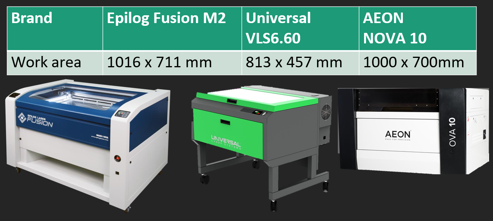

Introduction to Laser cutting
Laser cutting is a technology that uses a laser to slice materials. Laser cutting works by directing the output of a high-power laser most commonly through optics. The laser optics and CNC (computer numerical control) are used to direct the material or the laser beam generated.
Laser cutters can do Vector cutting, Vector engraving and Raster Engraving. I will go more into detail below.
Vector cutting is what you use to cut out the shape you want from the sheet of material. While prepping the file for Laser cutting, ensure the lines are hairline.
Vector engraving will etch a shape or words on the material, same as vector cutting, the lines used must be hairline.
Raster engraving does the same thing as vector cutting, however it takes a shorter time. The lines used while prepping the file must also be larger than hairline. The picture below shows the difference between raster and vector engraving
Machines used
In the Fab lab, we will be using three machines, the Epilog Fusion M2, the Universal VLS6.60 and the Aeon Nova 10. All the machines and their work space can be seen below.
Laser cutting in the FabLab
Before starting to laser cut in the Fablab, you have to get a score of at least 90/100 in the safety quiz and you also have to pass a physical assasment with the TSO before you are cleared to use the laser cutter.
Safety
Before using the laser cutter, ensure that the material you chose is cleared to be cut in the Fablab. Below is a list of materials that can and cannot be cut by the laser cutters in the Fab Lab.
You must also verify that the compressed air and exhaust are turned on, and most importantly, you must be actively watch your cut as the material might catch fire.
While cutting, it is not abnormal for the material to catch fire, however if the material stays on fire for a extended period, hit the emergency stop button, open the cover to stop the laser.If u feel safe, try to blow on the material to put out the fire. You should also immediately inform the staff on duty. Only use the fire extinguisher if the fire is a severe fire.
Laser cutting files
For the drawing of the part, you can use fusion 360 to draw out the 2D shape and then you can export as DXF, DWG, EPS, AI, CDR and PDF file types.
To import the sketch into the machine we use the software CoralDRAW. After importing the file into CoralDRAW, make sure that your lines are for the function which you wish to do.(hairline for cutting and more than hairline for engraving)Next, do a file print. This will transfer the file to the printer. In the Fablab, there the recommended settings for cutting and engraving in the different machines for different materials. Next change the colour of the lines, Red(R255) for cutting and green(G255) for engraving.
Attached below is a video of me laser cutting a part out for my project on the Universal VLS6.60 machine.